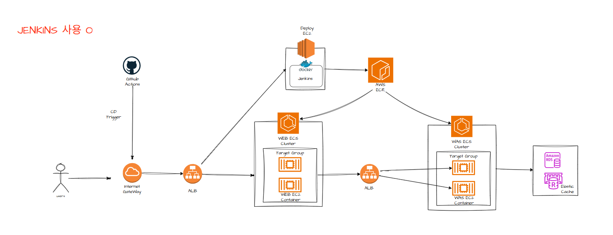
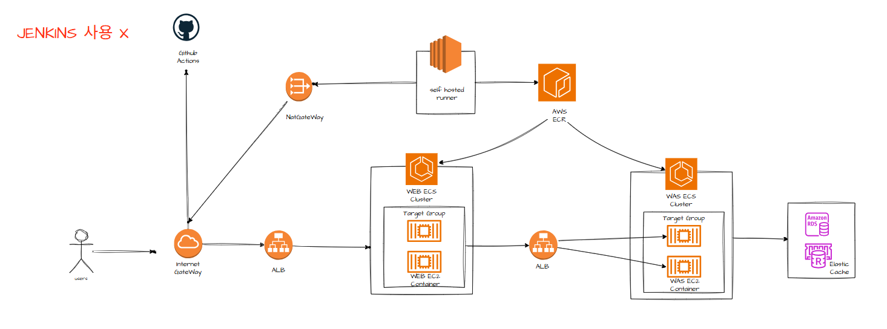
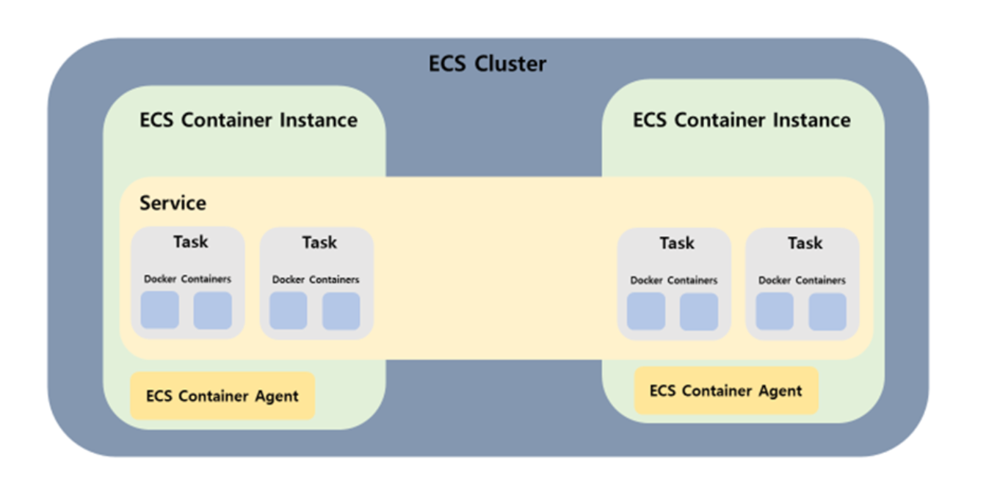

인프라 환경에서의 CI/CD 구축
개요
이 글은 CI/CD 파이프라인을 기존 인프라에 추가할 때 필요한 변경사항을 다룹니다. 개인 프로젝트를 통해 CI/CD를 직접 구축하며 학습한 내용을 정리했습니다.
CI/CD 개념
CI (Continuous Integration)
지속적인 통합을 의미합니다. Main branch로 PR을 Open한 뒤 Github Actions workflow로 빌드 & 테스트를 수행합니다. 빌드 & 테스트 실패 시 실패 리포트를 발행합니다.
CD (Continuous Deployment)
지속적인 배포를 의미합니다. Main branch로 PR Merge 시 자동 배포가 진행됩니다.
아키텍처 비교
Jenkins 사용 경우
PR Merge event로 Jenkins를 트리거 → Docker 이미지 생성 후 ECR에 Push → ECS에서 해당 이미지 이용

Self-hosted Runner 사용 경우
- Main branch로 PR이 Merge되면 Github Actions Workflow가 실행
- VPC 내부 Private subnet의 Self-hosted Runner가 Github으로부터 작업명령을 PULL
- Runner가 Docker 이미지 빌드 후 ECR로 푸시
- ECS가 ECR에서 새 이미지를 Pull하여 이용

Self-hosted Runner 사용의 장점
Jenkins EC2 앞의 ALB를 제거하여 외부에서 들어오는 통로가 없어 안전합니다. Private Subnet에 작은 EC2 (Runner)을 배치하여 runner EC2 → Nat GW → IGW → GitHub으로 가는 방향만(Outbound) 열어둡니다.
이점:
- 공격표면 제거가 가능합니다.
- Runner가 VPC 내부에 위치하여 WAS나 DB에 쉽게 접속합니다.
- Jenkins 설치, 플러그인, 업데이트 관리 부담이 없습니다.
GitHub-hosted Runner 사용 경우
VPC 외부 Github의 데이터 센터에 위치합니다. VPC 내부로 들어올 때 GitHub Actions가 AWS STS에 권한을 요청하여 임시 토큰을 얻습니다. IAM USER Access Key 없이도 GitHub와 AWS의 신뢰관계를 통해 임시 권한을 받습니다 (Assume Role).
ECR/ECS 사용 이유
Docker Hub는 외부 퍼블릭 레지스트리이기에 Private Subnet에서 접근 시 NAT Gateway 비용이 발생하지만, ECR은 VPC Endpoint를 통해 내부 통신이 가능해 비용과 지연을 줄일 수 있습니다.
ECR은 IAM으로 접근 제어를 통합 관리할 수 있습니다. ECS는 ALB와 네이티브 통합을 지원해 인스턴스 증감 시 Target Group 등록과 해제가 자동화됩니다.
ECS 구성요소
Cluster - 가장 큰 단위의 논리적 그룹입니다.
Task & Task Definition - Task는 컨테이너를 실행하는 최소 단위입니다. 최소 한 개 이상의 컨테이너를 포함합니다. Task Definition은 컨테이너 이미지, CPU/Memory 리소스 할당, Volume 설정 등이 포함됩니다.
Service - Task의 수명주기를 지속적으로 관리하는 상위 그룹 단위입니다.
Container Instance - EC2 기반 배포 시 EC2 Instance를 의미합니다. 하나의 Cluster 안에 여러 Container Instance가 있을 수 있고, 하나의 Instance 안에 여러 Task가 있을 수 있습니다. Fargate 사용 시 Container Instance 개념은 사라집니다.

리소스 배치 및 흐름
Public Subnet:
- NAT GW - Private 자원들이 인터넷으로 나갈 수 있는 통로를 제공합니다.
- External ALB - 외부 사용자가 인터넷을 통해 내부로 접근하는 입구입니다.
Private Subnet:
- Self-hosted Runner - 외부에서 접근할 필요가 없으며 NAT GW를 통해 밖으로만 나갑니다.
- WEB ECS Cluster - 외부 사용자가 ALB를 통해 접근합니다.
- Internal ALB - WEB에서 WAS로 가는 내부 통신용 로드밸런서입니다.
- WAS ECS Cluster - 비즈니스 로직과 데이터 처리, 외부와 철저히 격리됩니다.
- RDS/Elastic Cache - 주요 데이터 보관, 외부와 격리됩니다.
배포 흐름:
Self hosted runner → Nat GW → GitHub 명령을 가져옴 → ECR에 푸시 → ECS에 업데이트
외부 접속 흐름:
외부 users → IGW → Public ALB → WEB ECS → WAS ECS → DB
추가 고려사항
ECS 대신 EC2 사용 시
개발자가 코드를 작성하면 Git Actions가 배포를 관리합니다. EC2 내에 Self hosted runner가 해당 코드를 PULL하여 Docker image로 빌드합니다. 그런 다음 ECR에 저장하고 EC2가 해당 image를 pull하게 됩니다.
자동화 없이 수동 배포 시
개발자가 EC2에 접속해 (ssm or ssh) 서버 내에서 docker image를 빌드한 후 ECR에 저장합니다. EC2에서 이미지를 사용할 때는 직접 ECR에서 pull하여 사용합니다.
또는 로컬에서 빌드를 진행한 후 ECR에 이미지를 바로 보내고, 저장된 이미지를 EC2가 사용하는 방법도 있습니다.
로컬에서 빌드 시 보안상 이점
-
빌드 도구 부재 - EC2에 빌드 도구가 없어서 해커가 침입했을 때 악성 코드를 다운로드하고 컴파일해서 실행하기 힘듭니다. Docker의 Multi-stage build 기법을 사용하면 실행 이미지에 빌드 도구를 제외하고 필요한 최소 바이너리만 남길 수 있습니다.
-
바이너리 코드 실행 - 소스 코드가 서버에 올라가는 것이 아니라 바이너리 코드로 실행되므로 해커가 이미지를 봐도 로직을 그대로 읽기 어렵습니다.
-
.git 폴더 부재 - 서버 내에서 빌드 시 .git 폴더가 존재해 과거 수정 이력, 이전 개발자의 커밋 기록, 실수로 올린 비밀번호 등이 남습니다. 이미지 형태로 바로 서버에 올리면 최종 결과물인 스냅샷이 실행되므로 정보 유출이 적습니다.
-
Read-only 실행 - 이미지 형태로 배포하면 Read-only로 띄우기가 쉽습니다. 해커가 침입해도 이미지가 읽기 전용이어서 코드를 임의로 수정할 수 없습니다.
CI/CD의 이점
CI/CD를 통해 기존에 새 코드를 commit에서 production으로 가져오는 데 필요했던 수동 개입을 자동화했습니다. 그 결과 다운타임을 최소화하고 코드 릴리스 주기가 단축되었으며, 코드의 업데이트와 변경 사항을 더욱 빠르게 통합할 수 있게 되었습니다.